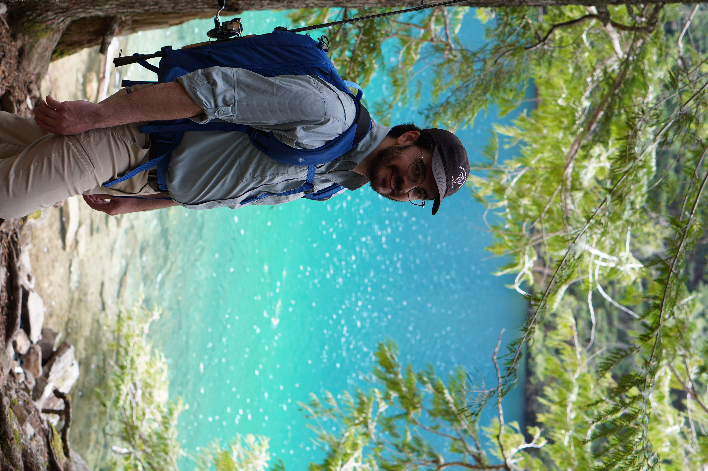

Laurens J. Bosman
Simon Fraser University · Sociolinguistics · Computational Linguistics
My research focuses on sociolinguistics and the application of computational and corpus-linguistic methods to the study of patterns and variation in human language.
I graduated with an MA in Linguistics from SFU in December of 2025. My thesis is titled "Morphosyntactic Variation in the Past Tense of Greek Canadians"
While I am currently working as the Undergraduate Program Assistant for the Department of Engineering Science at SFU, I am still an active member of the linguistics community at SFU where I continue to work with my supervisor, Dr. P. A. Pappas, on research related to my thesis. I have also joined Dr. Sara Ng's Computational Speech Lab (COS Lab) to continue collaborating on research related to computational linguistics and corpus linguistics.
Research
Greek Dialectology & Sociolinguistics
Revising the Greek forced alignment pipeline built around the Montreal Forced Aligner (MFA) to make it accessible to researchers working with Greek data.
Register Variation in Podcasts
LING 803 project under Dr. Maite Taboada investigating register variation in podcasts, published in the Register Studies Journal.
Currently Reading
When I am not busy with my work, research or family I enjoy reading a wide variety of books, both fiction and nonfiction. Here is a selection of books that I am currently reading. Perhaps, if I feel like it, I will post a reading list for the year at some point with the books that I have read so far this year.
📖 Fiction
- The Cardinal of the Kremlin by Tom Clancy
- Morte Arthure by unknown author
📘 Nonfiction
- Ferdinand de Saussure by Jonathan Culler
- The Basic Writings of Bertrand Russell by Bertrand Russell
Contact
📍 Burnaby, British Columbia